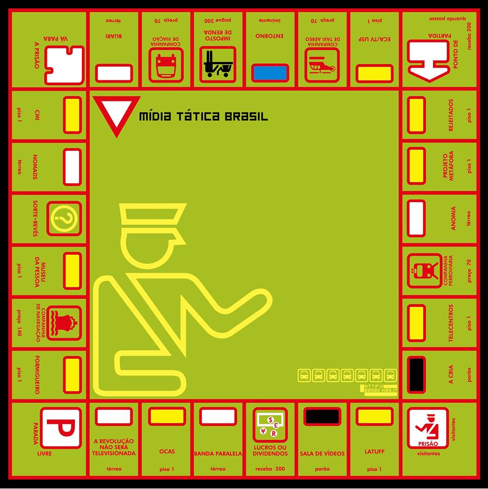

Com a intenção principal de retomar a memória de subjetividades essenciais à internet brasileira, estamos propondo a organização de um arquivo tático buscando narrar uma trajetória coletiva referente a produção de festivais, encontros públicos, workshops, laboratórios experimentais que configuraram ações construídas em conjunto e marcaram tendências na cultura digital brasileira - não sem metodologias mas com processos emergentes de encontros e escritas, não sem ideologias mas com horizontes radicais e multidisciplinares.
O arquivo é dedicado a compilação e restauração de material digital configurado por websites, publicações, listas de discussão e wikis desenvolvidos por uma rede mobilizada por artistas, pesquisadores e ativistas que abrange o periodo de 2002 a 2003 a partir da ação global dos povos até as jornadas de junho e ocupações entre 2012 a 2013 no Brasil. Nesses entremeios de duas décadas de internet brasileira algumas redes conectadas provocaram situações no campo social e político que mediaram comportamentos nas plataformas digitais, políticas de internet e de acesso, além de políticas de fomento à cultura, agregando as experiências de mobilização e inovação de tecnologias atentos ao comportamento cultural brasileiro.
O potencial crítico do uso das tecnologias e das táticas midiáticas hoje, assim como o próprio conceito de política que vivemos no Brasil, requer revisitar os métodos de avanço do “campo autonomista”, de livre e intensa contaminação teórica e prática radical na construção de ferramentas e conceitos mais apropriados à nossa realidade.
Arquivo Tático, reinventeceduras
Como repositório de arquivos para experiências táticas, o midiatatica.info abrange uma série de projetos na convergência de arte, mídia, comunicação e tecnopolítica no contexto brasileiro, do período de ~ 2003 a 2013. Uma documentação que abrange as extensões da arte na cultura de internet brasileira pensada a partir de desvios e orientada pelas principais ações que subsidiam a pesquisa, incluindo eventos, artigos e publicações relacionadas.

Estamos re-formulando esta plataforma, entre em contato .
_ARQUIVOS
Desvio 1_ Do festival Mídia Tática Brasil abrangendo assuntos e projetos relacionados a ação global dos povos, indymedia, seattle, midia ativismo, popularização dos meios eletrônicos e da internet no brasil, movimento de software livre, Gilberto Gil como ministro da cultura.
[+]cronologia de açõesDesvio 2_ Das jornadas de junho e as ocupações, compreendendo as publicações e mobilizações sociais que marcaram comunidades em rede, as cartografias afetivas, tecnomagias, protestos de rua e black blocs.
[+]publicações relacionadas